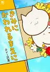

カレー沢薫（カレーざわ かおる）
きみにかわれるまえに

01TBD
ひとりでしにたい
TBD
データベース
| タイトル | ISBN | 絵 | 作 | 発行 | URL | 紙 | 電子 | その他1 | その他2 |
|---|---|---|---|---|---|---|---|---|---|
| きみにかわれるまえに | 9784537142426 | カレー沢 薫 | 日本文芸社 | url | Y | 4172 | |||
| ひとりでしにたい（01） | 9784065189931 | カレー沢 薫 | ドネリー美咲 | 講談社 | url | Y | 3870 | ||
| ひとりでしにたい（02） | 9784065210505 | カレー沢 薫 | ドネリー美咲 | 講談社 | url | Y | 3871 | ||
| ひとりでしにたい（03） | 9784065241011 | カレー沢 薫 | ドネリー美咲 | 講談社 | url | Y | 3885 | ||
| ひとりでしにたい（04） | 9784065269190 | カレー沢 薫 | ドネリー美咲 | 講談社 | url | Y | 3988 | ||
| ひとりでしにたい（05） | 9784065290828 | カレー沢 薫 | ドネリー美咲 | 講談社 | url | Y | 3865 | ||
| ひとりでしにたい（06） | 9784065313336 | カレー沢 薫 | ドネリー美咲 | 講談社 | url | Y | 3884 |